Крок II групового проєкту: схема процесу TO-BE у BPMN, документ продуктових вимог (PRD), прототип інтерфейсу, верхньорівнева ентерпрайз-архітектура і примітка про використання ШІ.
| Назва проєкту | «Кейс поранення», модуль цифрової екосистеми Міноборони (функція в Армія+) |
|---|---|
| Команда | Назар Обод, Олександр Галака, Маргарита Вовчок, Єгор Ісаков, Сергій Майборода, Михайло Фомін |
| Дата і версія | 26.11.2026, v1.0 |
| Курс | KSE, «Product Management у війську: побудова цифрових екосистем під час війни» (MIL600) |
| Репозиторій | github.com/obodnazar/mil600-wounded-case (документи, BPMN, код прототипу) |
Коротко про ідею. Після поранення людина проходить шлях від первинної медичної картки до ВЛК і виплат, а документи на цьому шляху готують різні установи в різних системах. Боєць не бачить, які документи йому потрібні і де кожен із них, а частина не завжди знає, що вона винна. Ми пропонуємо один «кейс поранення» в Армія+: він відкривається сам із еПМК, збирає події з наявних систем, показує кожному його частину роботи, рахує строки й нагадує. Перевіряє система, вирішують люди: командир, ВЛК, розпорядник коштів.
Ми пройшли кожен крок нашої схеми AS IS (крок I) і поставили до нього чотири питання з лекції: навіщо він існує, яку цінність або контроль дає і для кого, чи можна його прибрати або об’єднати, і якщо лишаємо, чи може його зробити система. Норми й рішення команди, на які ми спираємося, наведено в PRD (розділ 6).
| Крок AS IS | Навіщо існує | Цінність / контроль, для кого | Прибрати чи об’єднати? | Що в TO-BE робить система, а що людина |
|---|---|---|---|---|
| Медик надає допомогу й оформлює первинну медичну картку (еПМК) | Зафіксувати поранення й допомогу одразу, поки є свідки | Для бійця це основа всіх подальших прав; для держави облік поранень | Не прибираємо: це медичний факт і чинний наказ МОУ №879 | Медик вносить еПМК у МІС ЗСУ, як і зараз. Система отримує подію і сама відкриває кейс |
| Прийняття в заклад, лікування, документи епізоду, переведення | Лікувати людину й вести медичний запис | Для бійця лікування; для закладу медична документація | Не прибираємо: клініку продукт не чіпає | Заклад працює у своїй системі. Сервіс фіксує надходження й переведення та запускає строки |
| Поранений сам уточнює, чи передали відомості про переведення | Щоб частина знала, де боєць, і не було підозри в СЗЧ | Контроль для командира (облік); для бійця захист від помилкового статусу | Прибираємо як обов’язок бійця: за нормою повідомляє заклад | Сервіс приймає подію від закладу. Якщо її немає, ставить задачу супроводу, а не бійцю |
| Рапорт безпосереднього командира → наказ командира частини | Офіційно встановити обставини поранення | Контроль командира; підстава для довідки | Об’єднуємо з довідкою в одну задачу частини: рапорт і наказ частина оформлює в СЕДО, як і зараз | Сервіс ставить частині одну задачу «довідка про обставини травми» і стежить за строком |
| Оформлення довідки про обставини травми і її строк | Підтвердити, що травма отримана внаслідок дій противника | Для бійця підстава для ВЛК і виплат; для держави контроль обставин | Не прибираємо: це вимога ст. 260 Статуту внутрішньої служби і наказу МОУ №402 | Начальник медслужби складає, командир підписує (рішення). Сервіс рахує 5 днів, нагадує, надсилає довідку закладу й бійцю і фіксує отримання |
| Супровід уточнює статус довідки | Щоб довідку не забули | Контроль для бійця й супроводу | Замінюємо автоматичним нагадуванням | Сервіс нагадує командиру й супроводу, коли строк спливає. Людина втручається лише тоді |
| Поранений збирає документи й уточнює відсутні, родина допомагає | Щоб пакет на ВЛК був повний | Для бійця, але ціною його часу й нервів | Прибираємо як обов’язок: документи пересилають установи | Сервіс показує бійцю перелік документів і стан кожного; родина звертається через супровід |
| Частина координує направлення на ВЛК | Вирішити, що людині вже потрібен огляд | Рішення командира або закладу; контроль держави | Не прибираємо: це рішення уповноваженої особи | Сервіс показує комплектність і нагадує. Направляє командир за рекомендацією лікаря або заклад, що лікує |
| ВЛК перевіряє наявність документів, повноту й формулювання | Не оглядати без потрібних документів | Для ВЛК і держави якість рішення | Спрощуємо: технічну комплектність перевіряє система ще до направлення | Сервіс показує прогалини й автора документа. Змістову перевірку робить ВЛК. Чекліст не блокує направлення |
| Зауваження ВЛК, поранений просить автора виправити, автор виправляє | Виправити помилку в документі | Для бійця, щоб пакет пройшов | Прибираємо посередництво бійця | Сервіс ставить задачу автору напряму і фіксує нову версію документа |
| Огляд і постанова ВЛК | Медичне рішення про придатність і причинний зв’язок | Для бійця, командира й держави | Не прибираємо і не автоматизуємо | ВЛК ухвалює постанову у своїй МІС (рішення). Сервіс показує результат бійцю й частині |
| Дії частини за постановою | Оформити наслідки: відпустку, лікування, звільнення | Командир, облік | Не прибираємо | Сервіс показує задачу частині й окремо фіксує, що її виконано |
| Додаткова винагорода під час лікування | Підтримати людину на стаціонарному лікуванні | Для бійця гроші; для держави контроль підстав | Не прибираємо; не чекає постанови ВЛК | Сервіс збирає підстави й показує стан. Наказ видає командир (рішення), виплачує фінслужба |
| Одноразова грошова допомога (ОГД) | Компенсація за поранення, що призвело до інвалідності чи втрати працездатності | Для бійця гроші; для держави контроль підстав | Не прибираємо; починаємо лише після постанови ВЛК | Сервіс перевіряє пакет і показує кроки. Висновок дає уповноважений орган, рішення ухвалює розпорядник коштів |
| Контроль огляду ВЛК під час тривалого лікування | Щоб людина не лишалася роками без рішення про придатність | Для бійця й командира; для держави облік | Не прибираємо | Сервіс рахує строк: з 24.11.2026 до 12 місяців від початку лікування, і нагадує. Огляд організовує заклад |
Підсумок: із 15 груп кроків ми прибираємо три обов’язки, які зараз лежать на бійцеві (повідомляти про переведення, збирати документи, носити зауваження), об’єднуємо рапорт і наказ із довідкою в одну задачу частини, а нагадування й технічну перевірку пакета передаємо системі. Жодне медичне рішення, підпис чи рішення про виплату ми не прибираємо.
Схема на наступних двох сторінках має шість доріжок: військовослужбовець, медик і заклад, наш сервіс (система), частина, ВЛК і фінслужба з органом ОГД. Іконка людини в задачі означає, що крок виконує людина. Шестерня і синій колір означають, що крок виконує сервіс «Кейс поранення». Помаранчеві задачі позначають рішення уповноваженої особи: підпис довідки й наказ про винагороду (командир), направлення на ВЛК (командир або заклад), постанову (ВЛК) і рішення про ОГД (розпорядник коштів). Як у кейсі відпустки з лекції: перевіряє система, вирішує людина.
Це огляд. Повтори подій, конфлікти джерел, невідомі дати й інші винятки описано в детальній моделі to-be.bpmn (огляд і сім площин), її ми додаємо окремим файлом. Обидва файли відкриваються в bpmn.io або Camunda Modeler.
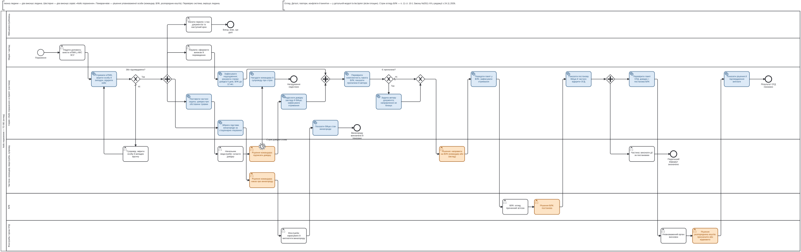
Схема векторна, у PDF її можна збільшувати. Файл to-be-overview.bpmn додано до здачі.
Структура з лекції, 13 розділів. PRD фіксує домовленість між користувачем, процесом, командуванням, нормативкою, даними й розробкою. Факти й цифри без джерела тут не наводимо; те, чого ще не знаємо, позначено [TBD].
Після поранення військовослужбовець проходить шлях: первинна медична картка, лікування в одному чи кількох закладах, документи частини (рапорт, наказ, довідка про обставини травми), направлення на ВЛК, постанова і виплати. Кожен документ готує інша установа у власній системі. Документи між собою пересилають установи, але цілого шляху не бачить ніхто: боєць не завжди знає повний перелік документів і на якому етапі кожен, а частина не завжди бачить, що вона винна і до якого строку.
Міноборони пише, що помилки в документах після поранення можуть повернути пакет на доопрацювання й затримати статуси та виплати; частоти й строків МОУ не публікує (роз’яснення МОУ від 02.06.2026). Тема «направлення на ВЛК та лікування» найчастіша у скаргах Військовому омбудсману: 23% із 2 455 скарг у жовтні 2026 року, 19–23% у травні–жовтні. Це частка скарг, а не поранених, тому для нас це контекст, а не стартовий рівень. Головну проблему команда прийняла як гіпотезу: ні поранений, ні частина не бачать, як медичні документи перетворюються на рішення ВЛК і як це рішення виконують. Докладно — у BRD (крок I).
| Хто | Що йому потрібно від продукту | Що він робить у процесі |
|---|---|---|
| Військовослужбовець (основний користувач) | Бачити свій шлях: де зараз кейс, які документи готові, яких бракує, хто має діяти, які строки й виплати | Лікується; за потреби звертається до супроводу. Обов’язкових кроків у сервісі в нього немає |
| Служба супроводу | Бачити всіх призначених поранених, задачі, звернення й прострочені строки | Уточнює невідоме, допомагає, коли боєць не може сам |
| Командир частини, штаб, начальник медслужби | Бачити, що частина винна кожному пораненому і до якого строку; без діагнозів | Складає й підписує довідку, видає накази, направляє на ВЛК |
| Родина / довірена особа | Зрозумілий спосіб звернутися й отримати відповідь | Звертається через супровід; власного доступу до кейсу в першій версії немає |
| Медик / заклад, ВЛК, фінслужба, орган ОГД | Не отримати ще однієї системи для введення даних | Працюють у своїх системах; сервіс отримує від них події |
| Аналітик / керівництво | Бачити, де маршрут сповільнюється, без даних конкретних людей | Працює з агрегатами BO |
| Замовник і власники систем: МОУ (ГУІТ), Армія+, МІС ЗСУ, ІКС «Супровід», СЕДО, МОЗ / НСЗУ | Погодити інтеграції, повноваження й захист даних | Можливий спонсор і власник продукту; погоджують обмін |
Персони потреб ми збирали з публічних голосів, а не з інтерв’ю: P1 — боєць, якому треба пояснити фінансовий результат; P2 — боєць без доступу до мобільного застосунку; P3 — родич, який допомагає з координацією; P4 — фахівець супроводу на стику установ. Інтерв’ю з командирами, медиками й ВЛК ще не проводили.
Поточний процес описано в схемі AS IS (крок I): сім доріжок, лікування й документи частини йдуть паралельно, на бійцеві лежить уточнення переведень, збирання документів і передача зауважень. Довідку частина надсилає закладу й бійцю, але статусу ніхто не показує. Контроль строків (5 днів на довідку, огляд ВЛК під час лікування) тримається на пам’яті людей. Чотири площини: люди — сім ролей; процес — паралельні гілки з циклами доопрацювання; правила — наказ МОУ №402, Статут внутрішньої служби, Закон №2011-XII, постанови КМУ №168 і №975; системи — МІС ЗСУ, системи закладів і ЕСОЗ, СЕДО, канали фінслужби, між якими немає спільного кейсу.
| Пріоритет | Що входить |
|---|---|
| Must (MVP, F01–F10) | Один кейс на поранення; таймлайн бійця з наступним кроком; чеклісти документів окремо для ВЛК, винагороди й ОГД; задачі й строки частини; направлення, отримання пакета ВЛК і постанова; дві виплати окремо; маршрут без входу бійця через супровід; агреговані показники; симулятор джерел; ролі, аудит і стани Extreme UX |
| Should (наступні ітерації) | B01 чернетки рапортів за погодженими шаблонами; B02 реальні адаптери МІС, СЕДО й фінансових джерел; B03 окремий доступ представника (потребує зміни нормативки) |
| Could (дослідити) | B04 підказки реквізитів документа за допомогою ШІ (не юридична оцінка); B05 повний офлайн, SMS і push; B06 розширена аналітика навантаження |
| Won’t (поза продуктом) | Медична допомога й оцінка, автоматичні рішення про право, відмову, СЗЧ чи зупинку виплат, оскарження в суді, реабілітація після звільнення, питання родин загиблих і зниклих, широкий новий експорт ЕСОЗ |
| # | Правило | Джерело |
|---|---|---|
| R1 | Довідку про обставини травми складає начальник медслужби, підписує й видає командир частини; підстава — наказ командира | Наказ МОУ №402, додаток 5; Статут внутрішньої служби ЗСУ |
| R2 | Строк довідки — 5 днів, лише якщо травму отримано внаслідок дій противника. Рахуємо від надходження на лікування, перший день — наступний (тлумачення команди) | Ст. 260 ч. 5 Статуту (Закон №548-XIV у ред. Закону №4632-IX); ADR 0012 |
| R3 | Огляд ВЛК під час лікування — не пізніше закінчення безперервного лікування, але не пізніше 12 місяців від початку лікування; після продовження стаціонарного лікування повторний огляд — не пізніше 4 місяців з дня продовження. До 24.11.2026 діяв строк 4 місяці | П. 11 ст. 10-1 Закону №2011-XII у ред. Закону №4954-IX від 19.08.2026, чинній з 24.11.2026 (звірено на zakon.rada.gov.ua 15 і 26.11.2026) |
| R4 | На ВЛК направляє командир за рекомендацією лікаря або заклад, що лікує | Наказ МОУ №402, розд. II пп. 6.1, 6.5; ADR 0013 |
| R5 | Винагорода 100 000 грн за стаціонарне лікування після поранення, пов’язаного із захистом Батьківщини, не чекає постанови ВЛК. З 24.11.2026 закон додає 50 000 або 100 000 грн, якщо лікування продовжено понад 12 місяців | Постанова КМУ №168, п. 1-2; Закон №4954-IX; ADR 0011 |
| R6 | ОГД — одна одноразова виплата, розглядаємо лише після чинної постанови ВЛК: пакет → висновок уповноваженого органу → рішення розпорядника (призначити / відмовити) → виплата. Під час воєнного стану рішення — протягом трьох місяців після отримання всіх документів | Постанова КМУ №975, пп. 20–24; ADR 0011, 0013 |
| R7 | Командир не бачить діагнозів і медичних записів; доступ за роллю й частиною; медичні дані — у джерелі | Закон №2297-VI «Про захист персональних даних»; Основи законодавства про охорону здоров’я №2801-XII (медична таємниця) |
| R8 | Реальні дані — лише після категоризації інформації, захисту за ст. 8 Закону №80/94-ВР і погодження власника системи | Закон №80/94-ВР; постанова КМУ №712 |
| R9 | Сервіс не ухвалює рішень і не застосовує санкцій: сплив строку створює лише нагадування людині | Рішення команди; BR-8 |
Перехідних положень щодо вже розпочатого лікування Закон №4954-IX не містить, тому нове правило R3 ми застосовуємо до всіх кейсів. Це тлумачення команди, його варто перевірити з юристом.
| ID | Функція | Що саме робить |
|---|---|---|
| F01 | Один кейс на поранення | Відкривається з еПМК; резерв — супровід відкриває вручну; пізніша подія приєднується після звірки; повтор не дублює кейс |
| F02 | Таймлайн і наступний крок | Етап, джерело й час кожного факту, наступна дія і відповідальний; «відправлено» ≠ «отримано» |
| F03 | Документи й чеклісти | Окремі переліки для ВЛК, винагороди й ОГД; версія, автор, стан, отримання; прогалина → задача автору |
| F04 | Задачі й строки частини | Довідка: складання, підпис, надсилання; строки R2 і R3; невідома дата → задача уточнення, а не вигадана дата |
| F05 | Направлення й ВЛК | Направлення належною роллю, отримання пакета, постанова, виконання дій за нею — окремі події |
| F06 | Дві виплати | Винагорода за періодами; ОГД одним пакетом після ВЛК; повернення ≠ відмова ≠ призначення ≠ виплата |
| F07 | Без входу бійця | Супровід веде кейс, журнал звернень, загальний гайд; звернення родича не відкриває йому кейс |
| F08 | Аналітика | Показники BO з визначенням, покриттям і невідомими; малі групи приховано |
| F09 | Симулятор джерел | Навчальні події МІС, закладів, СЕДО, фінансів через той самий шлюз; повтори, прогалини, конфлікти |
| F10 | Ролі, аудит, стани | Перевірка доступу на сервері, аудит без медичного змісту, чесні стани мережі, банер навчального прототипу |
| Умова | Вимога |
|---|---|
| Стрес, ніч, перший раз | На першому екрані — де зараз кейс, одна наступна дія, хто відповідає. Прості слова, без канцеляриту; терміни пояснено |
| Поганий зв’язок | Текстовий стан помилки, час останнього оновлення, повтор без дублювання дії; «успіх» лише після підтвердження сервера |
| Старий телефон, рукавиці | Мобільний макет, великі зони натискання, статус не лише кольором, масштабування тексту; легка сторінка без важких переглядачів |
| Тяжкий стан, немає телефона | Кейс рухається без входу бійця: задачі веде супровід |
| Безпека | Мінімум даних, доступ за роллю й частиною на кожен запит, аудит, захищені агрегати; реальні дані — після R8 |
| Надійність і продуктивність | Повтор події не створює дубля; збій не дає хибного «успіху». Конкретні пороги часу відповіді й доступності [TBD], їх погоджує власник |
| Система | Які дані беремо | Стан |
|---|---|---|
| МІС ЗСУ | Подія еПМК (мінімум полів, без клінічного змісту); постанова ВЛК (факт і тип) | Цільова інтеграція; власник і API не погоджені; у прототипі — симулятор |
| Системи закладів / ЕСОЗ | Надходження, переведення, виписка | Лише погоджений канал і обсяг; не підтверджено |
| СЕДО | Довідка про обставини травми, накази, квитанції про отримання | Цільова інтеграція; не підтверджено |
| Облік особового складу | Призначення бійця до частини | Не підтверджено |
| Фінансові джерела / орган ОГД | Накази, рішення, підтвердження виплат (без сум) | Не підтверджено |
| ІКС «Супровід» | Можливе розміщення модуля | Готовність і межі уточнює власник |
Кожна подія приходить у нашому конверті: джерело, тип, ідентифікатор запису, версія, час, підпис. Шлюз перевіряє джерело й підпис, відкидає повтор і бере лише потрібні поля. Клінічні документи лишаються в джерелі; сервіс зберігає метадані, стани, задачі й журнал.
| # | Що відбувається | Що бачить і робить користувач |
|---|---|---|
| 1 | Медик вніс еПМК, кейс відкрився сам | Боєць бачить «Лікування» і що від нього зараз нічого не потрібно; супровід бачить новий кейс |
| 2 | Частина отримала задачу на довідку | Командир бачить задачу й строк; боєць бачить «довідку готує частина, строк до …» |
| 3 | Довідку підписано й надіслано | Боєць і заклад бачать «отримано»; якщо строк сплив, супровід і командир отримують нагадування |
| 4 | Сервіс перевірив пакет ВЛК | Боєць бачить перелік і що бракує; автор документа отримує задачу |
| 5 | Направлення й постанова ВЛК | Боєць бачить «направлено», «отримано ВЛК», «постанова оформлена» окремо; частина бачить, що робити далі |
| 6 | Виплати | Боєць бачить окремо винагороду за періодами й ОГД кроками, причину повернення чи відмови, підтвердження виплати |
Екрани прототипу для цього сценарію — у розділі 3.
| ID | Критерій приймання (перевіряється на вигаданих даних) |
|---|---|
| AC01 | Повтор тієї самої події не створює другого кейсу; невизначений збіг особи → задача людині, без автоматичного злиття |
| AC02 | Кожен крок має джерело, час, відповідального й наступну дію; «відправлено» і «отримано» різні стани |
| AC03 | Переліки ВЛК, винагороди й ОГД окремі; неповний чекліст не забороняє направлення |
| AC04 | Строк довідки рахується лише від підтвердженого надходження; строк огляду ВЛК — 12 місяців від підтвердженого початку лікування; переведення не обнуляє відлік; невідома дата → задача уточнення |
| AC05 | Командир і супровід мають різні дії; направлення, отримання, постанова й виконання — окремі події; є шлях направлення закладом |
| AC06 | Винагорода рухається до постанови ВЛК; ОГД — лише після неї й однією виплатою; без події фінансового джерела немає «кошти отримано» |
| AC07 | Без входу бійця супровід веде задачі; звернення родича не відкриває йому кейс |
| AC08 | Невідомий знаменник дає «недостатньо даних», а не 0%; малі групи приховано |
| AC09 | Усі сценарії відтворюються через симулятор і той самий шлюз; повтор, пропуск і конфлікт не маскуються успіхом |
| AC10 | Командир отримує 403 на медичні дані; аналітик не бачить людей; мережевий збій не дає хибного успіху; банер навчального прототипу на всіх екранах |
Стан на 26.11.2026: прототип проходить 140 серверних тестів і 38 браузерних, вони покривають AC01–AC10 на синтетичних даних. Тестів зі справжніми користувачами ще не було.
| # | Мета | Метрика | Baseline | Ціль за 12 міс. |
|---|---|---|---|---|
| BO-1 | Скоротити час до постанови ВЛК | Медіана днів від поранення до постанови | [TBD] | −30% |
| BO-2 | Рідше повертати пакети | % пакетів, повернених хоча б раз (ВЛК і ОГД окремо) | [TBD] | < 10% |
| BO-3 | Без зупинок виплат через пропущений огляд | Кількість підтверджених зупинок | [TBD] | 0, якщо явище підтвердиться |
| BO-4 | Контекст: скарги на ВЛК і лікування | Частка, не KPI продукту | 23% (жовт. 2026) | Без цілі |
| BO-5 | Документи доходять до ВЛК без участі бійця | % документів пакета без ручної участі бійця чи родини | [TBD] | > 80% |
| BO-6 | Розвантажити супровід | Кейси на фахівця; робочий час на кейс | [TBD] | [TBD] |
| BO-7 | Боєць знає перелік і стан документів | % кейсів, де боєць бачить повний перелік і етап кожного | [TBD] | [TBD] |
Запобіжники: командир не бачить клінічних даних; жодних автоматичних санкцій; маршрут працює без входу бійця; невідоме не рахується як нуль. Цілі запропонувала команда, baseline запитаємо в розпорядників даних.
| Тема | Що потрібно або що може піти не так |
|---|---|
| Залежності | Власники й протоколи обміну МІС ЗСУ, СЕДО, систем закладів, фінансових джерел; рішення, де розміщувати модуль (Армія+ чи ІКС «Супровід»); регламент ролей |
| Ризик: канал не використовують | Частини й супровід працюють по-старому. Як знизити: регламент власника процесу, навчання ролей, показники використання |
| Ризик: прогалини даних | Цивільна лікарня поза ЕСОЗ. Як знизити: задача уточнення й чинний паперовий шлях |
| Ризик: витік медичних даних | Як знизити: мінімум даних, рольовий доступ, аудит, клінічне лишається в джерелі |
| Відкриті питання | Як застосовувати новий строк R3 до кейсів, що почалися до 24.11.2026; чи застосовні ст. 253–254 ЦК до строку довідки; baseline усіх BO; інтерв’ю з бійцями, командирами, медиками й ВЛК; моделювання повторного огляду після продовження лікування (у прототипі ще немає) |
Прототип ми зробили вайб-кодингом: це робочий вебзастосунок із чотирма панелями на вигаданих даних (боєць, командир і супровід, аналітик, симулятор джерел). Він запускається локально однією командою: npm ci --ignore-scripts && npm run dev у папці prototype/, далі адреса http://127.0.0.1:4317. Код і знімки — у репозиторії команди.
Проєктували не для «нормального користувача». Людина може бути під стресом, мати кілька хвилин, поганий зв’язок і старий телефон і робити це вперше. Тому на першому екрані бійця лише три речі: де зараз кейс, що далі і хто відповідає. Решта (документи, строки, виплати, журнал) нижче, окремими блоками. Усі стани написані простими словами, статус ніколи не позначається лише кольором, кнопки великі, а внизу постійне меню з чотирьох пунктів.
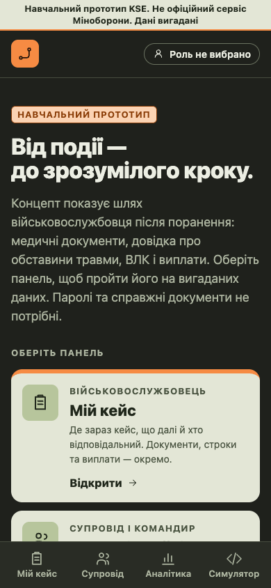
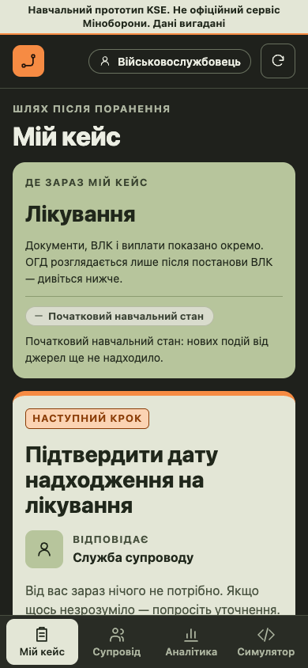
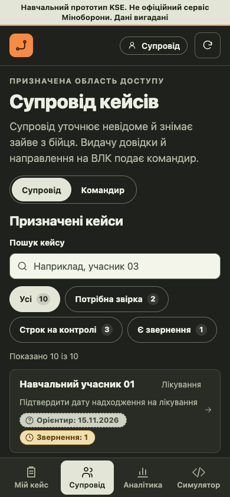
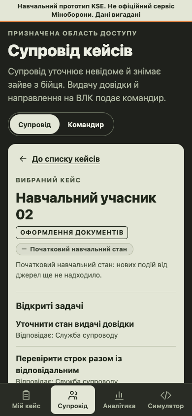
У симуляторі ми надсилаємо подію «еПМК від медичного джерела», і в бійця з’являється кейс. Далі надходження в заклад, задача частині на довідку, підпис і надсилання, перевірка пакета, направлення, постанова ВЛК і виплати. Кожна подія одразу змінює те, що бачать боєць і супровід. Нижче — таймлайн бійця після повного проходу (фрагмент).
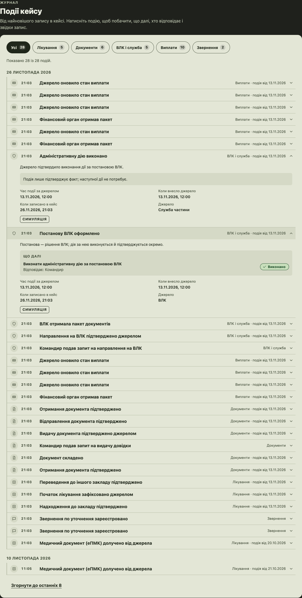
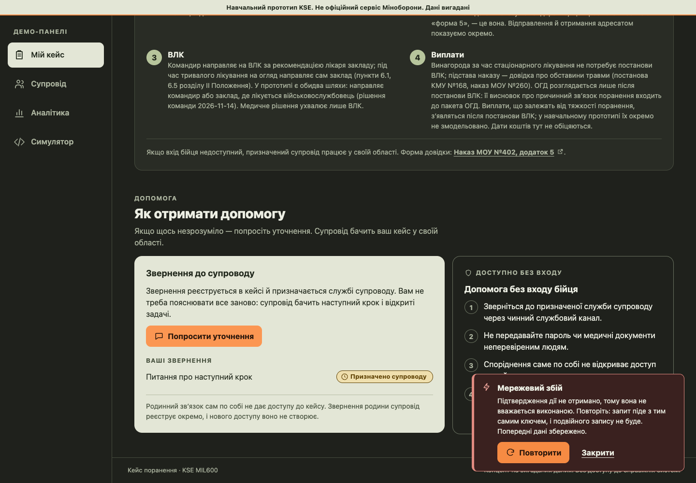
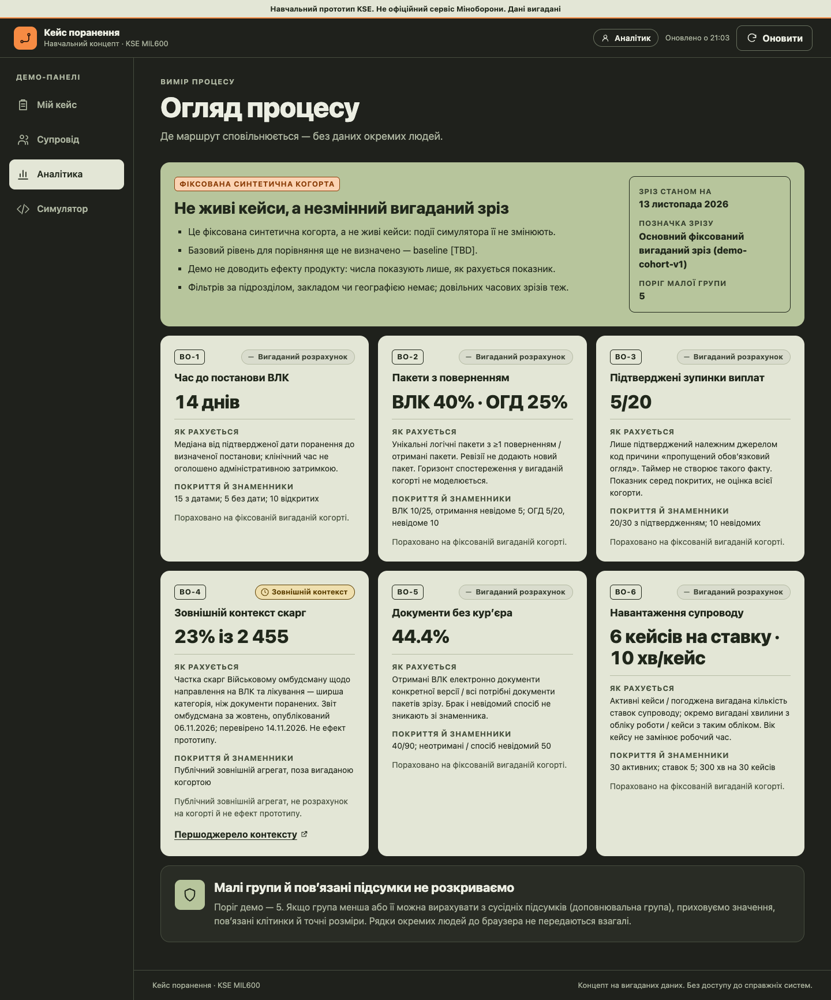
Окремо ми зробили короткий клікабельний прототип двох інтерфейсів за сценарієм, який описала команда: розділ «Поранення» для бійця і картка бійця для командира. Це один файл prototype-boyets-komandyr.html, він відкривається в будь-якому браузері без встановлення; перемикач «Боєць / Командир» угорі показує ту саму справу очима двох ролей. Командир підписує довідку про обставини травми (не еПМК: медичних даних він не бачить), після підпису сервіс сам надсилає довідку у ВЛК, заклад і бійцю. Пункти чек-листа про документи закриваються самі, коли документ підтвердило джерело, а свої дії боєць позначає сам, і вони переходять у вкладку «Виконано». Можна також повернути довідку на доопрацювання з причиною або вимкнути зв’язок і побачити, що підпис не пішов.
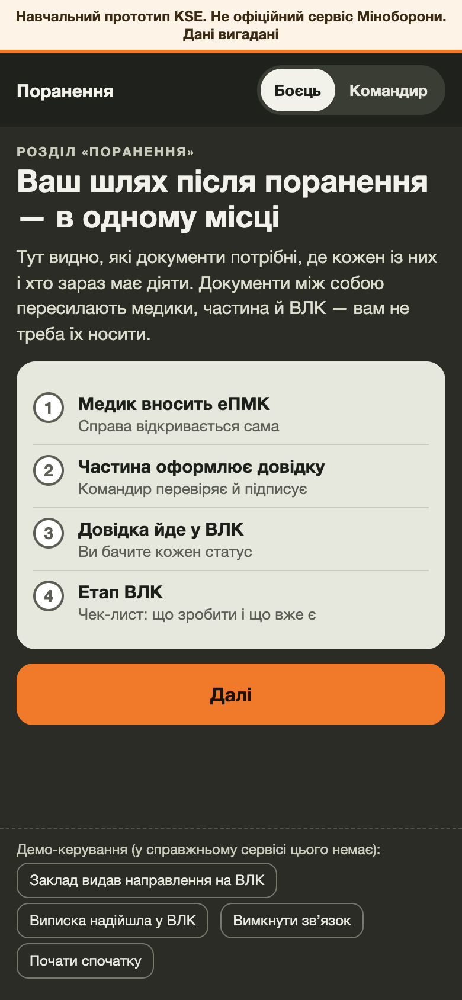
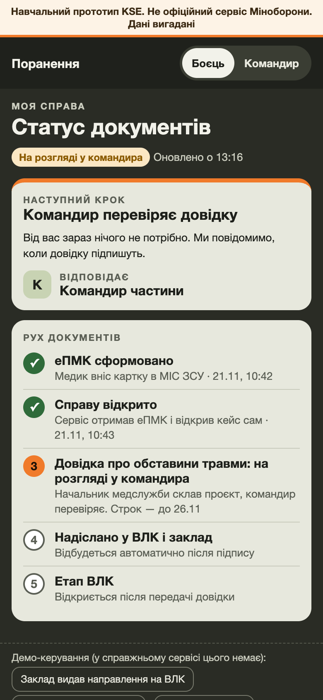
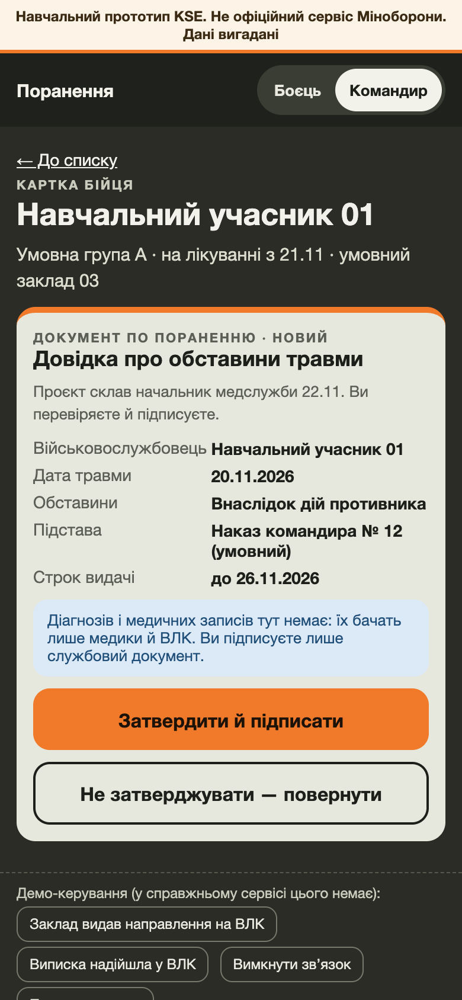
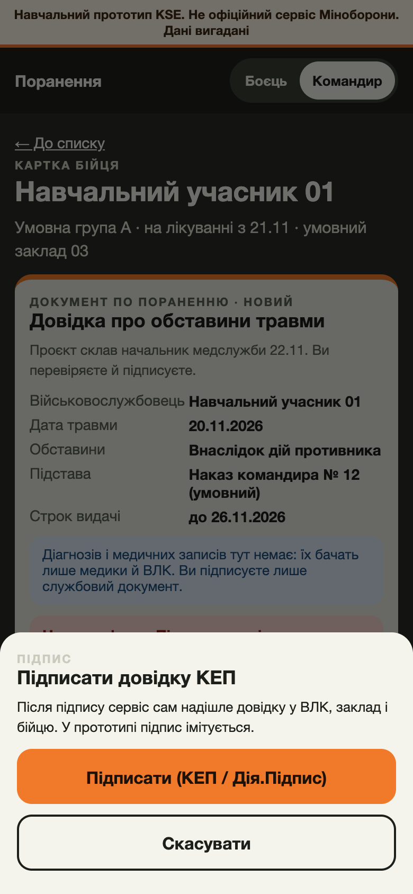
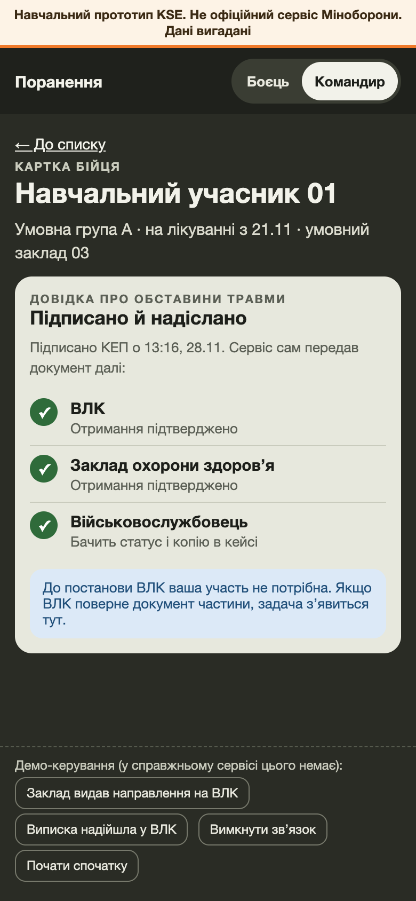
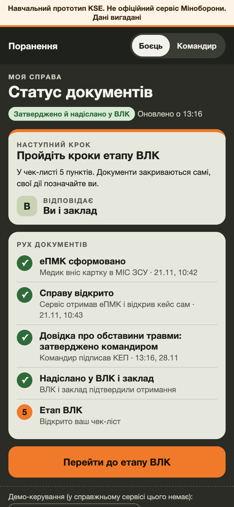
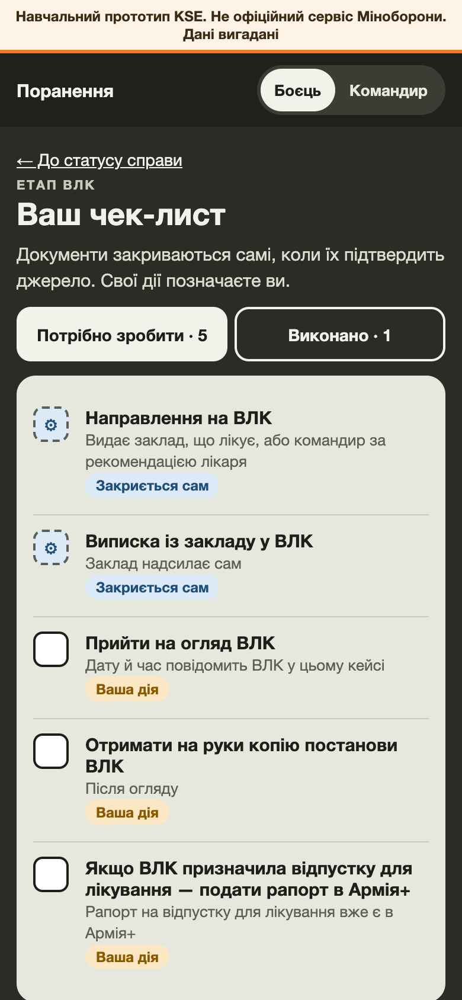
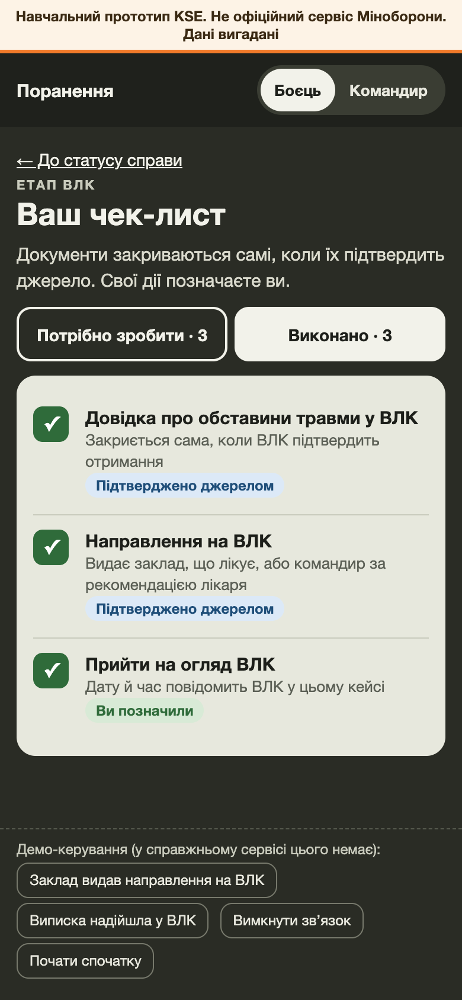
| Етап | Що бачить і робить боєць | Що бачить і робить командир | Статус у системі |
|---|---|---|---|
| 1. Ініціація | Відкриває «Поранення», читає вступ, тисне «Далі»; бачить, що еПМК сформовано і справу відкрито | Отримує позначку «Довідка на підпис» у списку поранених | Справу відкрито; довідку готує частина |
| 2. Погодження | Бачить «на розгляді у командира» і строк | Відкриває картку бійця, перевіряє довідку, підписує КЕП і затверджує або повертає з причиною | Затверджено командиром / повернуто на доопрацювання |
| 3. Передача у ВЛК | Бачить, що довідку надіслано і ВЛК та заклад її отримали | Нічого не робить: сервіс передає документ сам | Надіслано у ВЛК і заклад |
| 4. Проходження ВЛК | Отримує чек-лист; документи закриваються самі, свої дії позначає, і вони переходять у «Виконано» | Участі не бере до постанови ВЛК | Етап ВЛК |
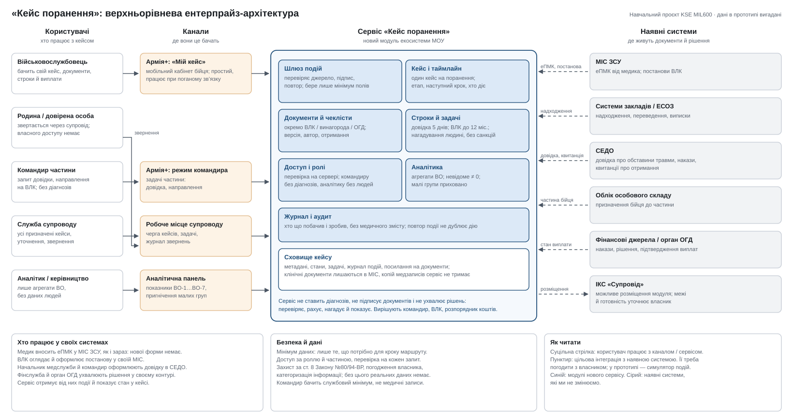
Задачу вирішує новий сервіс «Кейс поранення»: його бачать боєць у кабінеті Армія+, командир у режимі командира, супровід на робочому місці й аналітик на панелі. Медичні факти, підписи й рішення лишаються в МІС ЗСУ, системах закладів, СЕДО й фінансових системах; сервіс отримує від них події, рахує строки, перевіряє комплектність і показує стан.
Ми працювали з Claude (Anthropic) і Codex (OpenAI) як з помічниками. Напрям і рішення задавали самі. Команда вирішила, що виплату за стаціонарне лікування показуємо ще до ВЛК, а ОГД лише після постанови й однією виплатою; що на ВЛК може направити й заклад; що строк довідки рахуємо від надходження на лікування; що повний ланцюг «рапорт, наказ, довідка» лишається лише в AS IS. Сценарій двох інтерфейсів, бійця і командира, теж описала команда. Команда знайшла нову редакцію закону, за якою з 24.11.2026 строк огляду ВЛК становить 12 місяців, і суми винагороди, які з неї випливають.
ШІ проходив кроки AS IS за чотирма питаннями й пропонував, що можна прибрати, будував схеми TO-BE і архітектури, писав чернетку PRD, оновлював і тестував код прототипу, зібрав клікабельний прототип за сценарієм команди та збирав цей документ. Кожну чернетку ми читали й виправляли там, де бачили краще: наприклад, прибрали з опису проблеми «боєць сам збирає документи», бо їх пересилають установи, а також попросили писати простіше. Висновки ШІ ми не вважали юридичною чи медичною експертизою.
Приклади промптів:
Повний журнал використання ШІ з датами й промптами лежить у репозиторії команди, у файлі docs/ai-use.md.